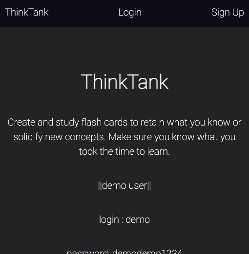
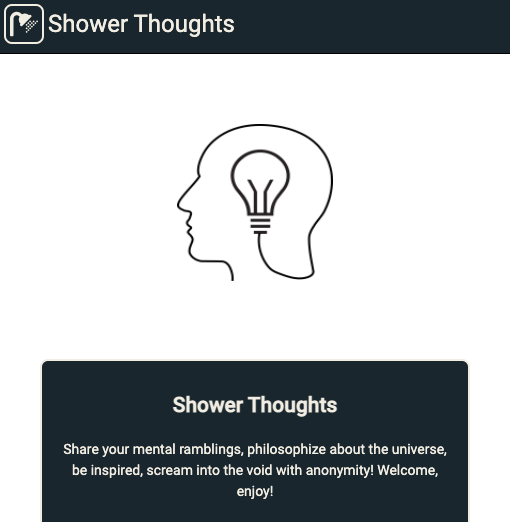

Projects
Recent Projects

Site
Github
A full-stack platform for creating and studying flashcards. Users can create an account and save, edit or delete unlimited decks of flashcards.
Created with: React, Node.js, Express.js, Knex, Mocha, Chai, RESTful API Endpoints, JWT, PostgresSQL

Site
Github
A full-stack social media platform dedicated to "shower thoughts" - brief, often funny and insightful observations about life. "Shower thoughts" is a popular hashtag across social media and also a dedicated subreddit.
Created with: React, Node.js, Express.js, Knex, Mocha, Chai, RESTful API Endpoints, PostgresSQL